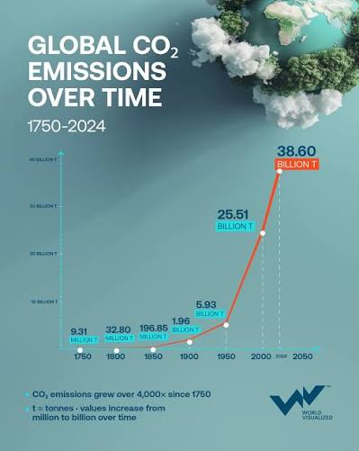
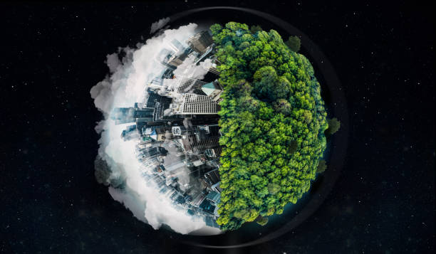
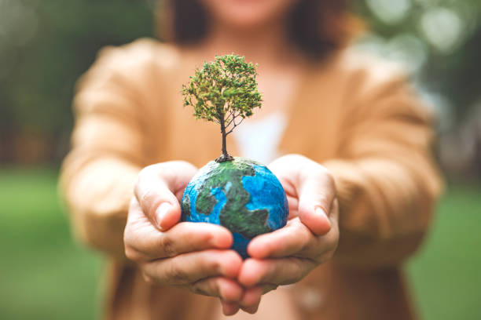
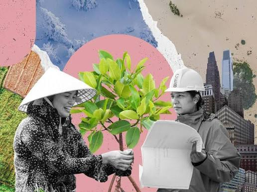
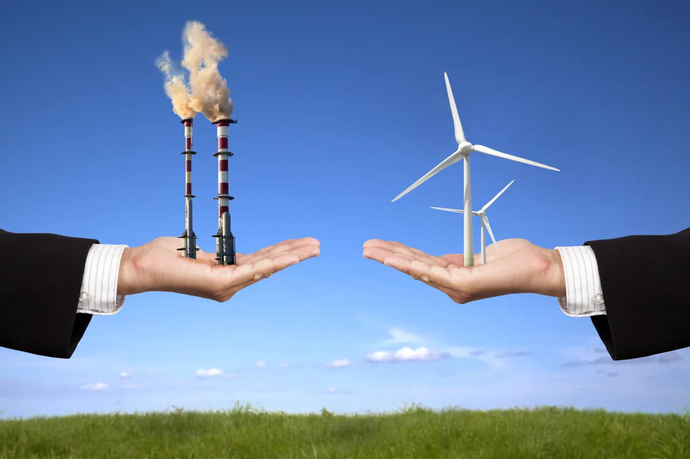

Climate change refers to long term changes shifts in temperatures and weather patterns(UN).
Climate change is a long-tem change in the average weather patterns that have vome to define Earth's local, regional and global climates (NASA).
Climate change is a long-term shift in global or regional climate patterns (National Geographic).
Climate change refers to the long term changes in the Earth's climate that are warming the atmosphere, ocean and land (UNDP).
WHAT ARE GREEN HOUSE GASES?
Greenhouse emissions are synonymously called Carbon Emissions.
Because of the high proportion of CO2 among the GHGs and the fact that CH4 eventually turns into CO2, the primary objective is to reduce carbon emissions.
EFFECTS OF CARBON EMISSIONS

Another reason Co2 is important in the Earths's system is because it dissolves into the ocean like the fizz in a soda can.
It reacts with water molecules, producing Carbonic Acid and Lowering the ocean's PH (Raising its acidity).
Since the start of the Industrial revolution, the PH of the ocean's surface waters has dropped from 8.21 to 8.10. This drop in PH is called Ocean acidification.
A direct and significant contributor to Climate change.
EFFECTS OF CLIMATE CHANGE

Hotter Temperatures-Nearly all land areas are seeing more hot days and heat waves.
More Severe Storms-Destructive storms have become more intense and more frequesnt in many regions.
Increased Drought-Climate Change is changing water availability, making it scarcer in more regions.
A warming, rising ocean-As the ocean warms, its volume increases since water expands as it gets warmer. Melting ice sheets also cause sea levels to rise. This leads to loss of land mass.
CLIMATE CHANGE: MITIGATION

Mitigation means making the impacts of climate change less severe by preventing or reducing the emission of greenhouse gases (GHGs) into the atmosphere.
Mitigation is achieved either by reducing the sources of these gases-e.g. by increasing the share of renewable energies, or by establishing a cleaner mobility system-or by enhancing the storage of these gases-e.g. by increasing the size of forests.
In short, mitigation is a human intervention that reduces the sources of GHG emissions and/or enhances the sinks.
CLIMATE CHANGE ADAPTATION

Adaptation means anticipating the adverse effects of CC and taking appropriate action to prevent or minimize the damage they can cause or taking advantage of opportunities that may arise.
Examples of adaptation measure include large-scale infrastrucuture changes, such as building defenses to protect against sea-level rise, and behavioral shifts, such as individuals reducing their food waste.
In essence, adaptation can be understiood as the process of adjusting to the current and future effects of climate change.
A BUSINESS IMPERATIVE: MITIGATION

Shifting Power Generation: to non-emitting sources, such as solar, wind, and nuclear; electrifying systems.
Reductions in Burining Fossil Fuels, including vehicles and building heating; reducing emissions through increased efficiency and decreased consumption of existing GHG-emitting activites.
Adapting Agricultural Systems, capturing and sequestering carbon to offset emissions from sources for which we have no viable non-emitting substitute, and removing past emissions from the atmosphere.